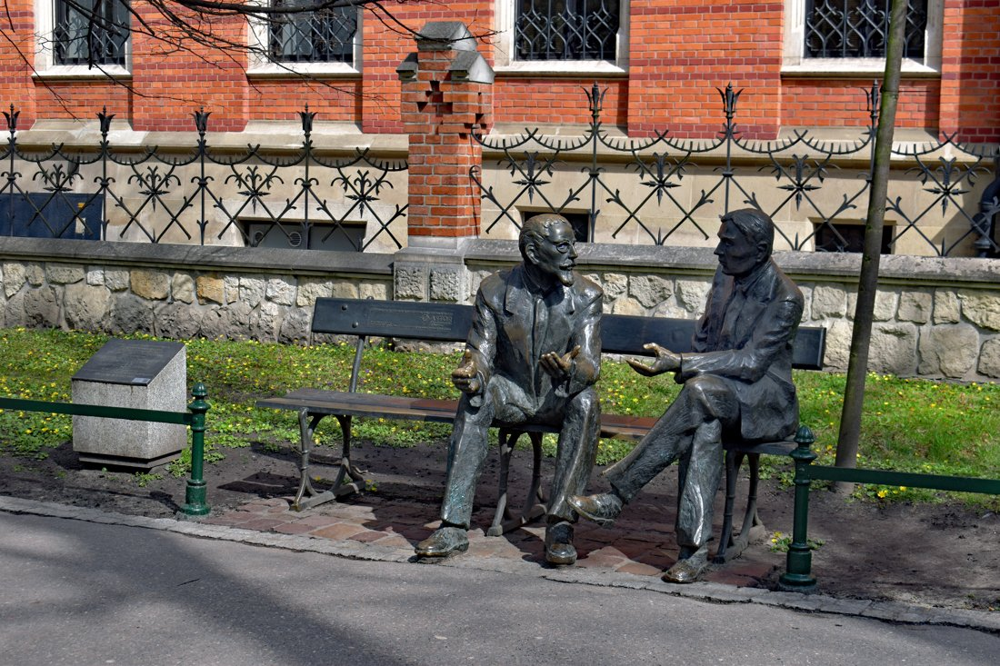
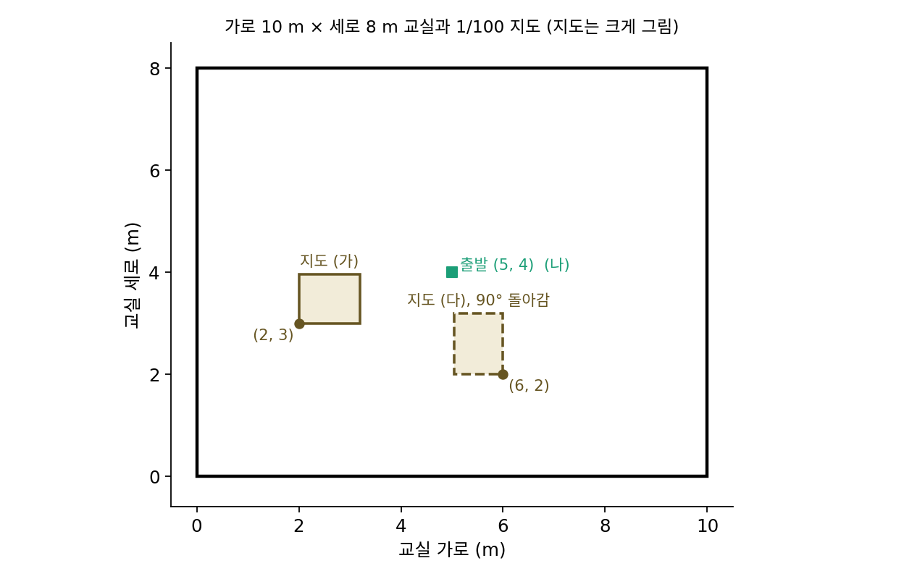
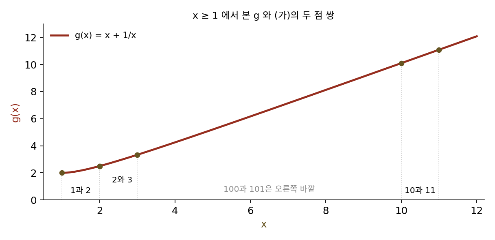
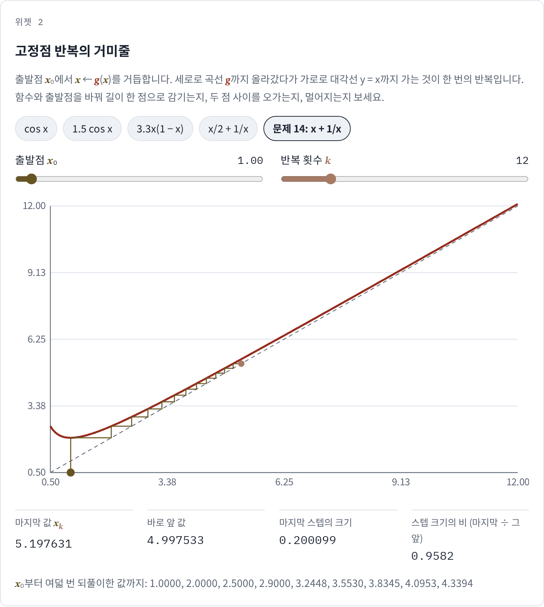
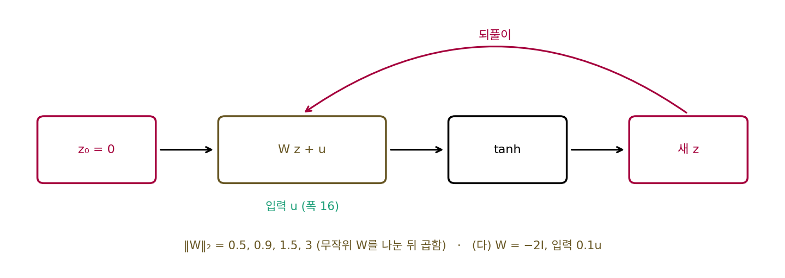

축약 사상: 배율이 1보다 작으면 되풀이가 한 점으로 모인다
행렬 하나가 입력의 차이를 몇 배로 늘이는지, 층을 쌓으면 그 배율이 어떻게 곱해지는지를 보았다. 그러면 계산기로 cos 단추를 거듭 누르는 놀이처럼, 같은 함수를 자기 자신에게 계속 거듭 적용하면 어떻게 될까? 계산기를 라디안으로 놓고 1을 넣은 뒤 cos 단추를 계속 누르면 0.5403, 0.8576, 0.6543, 0.7935, …로 흔들리다가 0.7390851…에 멈춘다. 0에서 시작해도, 3에서 시작해도, 100에서 시작해도 서른 번 남짓 누르면 같은 수에 멈춘다. 계산기가 처음에 무엇을 넣었는지를 잊는 것인데, 무엇이 이 잊음을 만들고 언제 이 잊음을 장담할 수 있을까?
역사: 공원 벤치에서 시작된 학파

1916년, 폴란드 크라쿠프의 플란티 공원을 걷던 수학자 휴고 슈타인하우스(Hugo Steinhaus)는 벤치 쪽에서 「르베그 적분」이라는 말을 들었다. 당시로서는 새로운 개념이라 놀라서 다가가 보니 젊은이 둘, 스테판 바나흐(Stefan Banach)와 오톤 니코딤(Otto Nikodym)이 수학 이야기를 하고 있었다. 슈타인하우스가 자기가 풀지 못하던 문제를 들려주자 바나흐는 일주일 안에 열쇠를 찾아왔고, 둘은 곧 첫 공동 논문을 썼다. 슈타인하우스는 뒤에 자기의 가장 큰 수학적 발견이 바나흐였다고 말하곤 했다고 전해진다.
바나흐는 대학 수학 과정을 정식으로 마치지 않았지만 1920년 르부프(지금의 우크라이나 리비우)에서 박사 학위를 받았다. 학위 논문 「추상 집합 위의 연산과 그 적분 방정식에의 응용(Sur les opérations dans les ensembles abstraits et leur application aux équations intégrales)」은 1922년 『수학 기초(Fundamenta Mathematicae)』 3권에 실렸다. 이 논문을 함수해석학의 출발점으로 꼽기도 한다. 그는 이 논문에서 함수들의 공간처럼 원소가 수가 아닌 공간에서도 거리를 재고 극한을 다루는 틀을 세웠고, 그 안에서 「거리를 일정한 비율 이하로 줄이는 사상은 고정점을 꼭 하나 가지며, 되풀이하면 그 점으로 간다」는 정리를 증명했다. 같은 되풀이로 미분방정식을 푸는 방법은 그보다 앞서 프랑스의 에밀 피카르가 썼는데, 그 이야기는 다음 개념에서 다시 만난다.

cos 단추를 누르면 한 점으로 모인다는 건 계산기로 서른 번만 눌러 보면 보이는데요. 그게 왜 학위 논문에 들어갈 정리예요?

수 하나라면 눌러 보면 되죠. 바나흐가 다룬 공간의 원소는 무엇이었죠?

함수들이요. 원소가 수가 아니면… 함수 두 개 사이의 거리부터 정해야 하네요. 수직선처럼 빼서 절댓값을 할 수가 없으니까요.

바나흐는 그 논문에서 함수들의 공간에서 거리를 재고 극한을 다루는 틀을 세웠어요. 「되풀이하면 모인다」를 함수에 대해 말하려면 그 틀이 먼저 있어야 했죠.

그럼 눌러 보는 방법은 함수에는 못 쓰겠네요. 함수를 함수로 보내는 계산을 서른 번 하고 「멈췄다」를 확인할 화면이 없으니까요.

수 하나에서도 마찬가지예요. 1에서 출발해 멈춘 것을 봤다고, 다른 모든 출발점에서도 멈춘다는 보장이 눌러 보기만으로 나오지는 않아요.

cos의 기울기는 크기가 1까지 갈 수 있잖아요. 그런데도 어디서 출발하든 모인다고 장담하려면, cos의 어느 구간을 봐야 해요?
계산기의 cos 단추
cos 단추는 누구나 손으로 해 볼 수 있으면서 되풀이가 정말 한 점으로 모이는지와 왜 모이는지를 모두 따져 볼 수 있어서 골랐다. 멈추는 수 x* = 0.7390851332는 cos x* = x*, 곧 단추를 눌러도 바뀌지 않는 수다. 1에서 시작해 스텝마다 x*까지 남은 거리를 재면 다음과 같다.
| 스텝 k | xk | 남은 거리 |xk − x*| | 앞 스텝 대비 |
|---|---|---|---|
| 1 | 0.540302 | 0.199 | 0.7619 |
| 2 | 0.857553 | 0.118 | 0.5960 |
| 3 | 0.654290 | 0.0848 | 0.7158 |
| 4 | 0.793480 | 0.0544 | 0.6415 |
| 5 | 0.701369 | 0.0377 | 0.6934 |
| 10 | 0.744237 | 0.00515 | 0.6708 |
| 12 | 0.741425 | 0.00234 | 0.6723 |
남은 거리가 스텝마다 대략 0.67배가 되고, 그 비가 점점 0.6736에 다가간다. 0.6736은 x에서 cos의 미분의 크기 |sin x|다. 두 점 사이의 기울기가 1보다 작으면, cos를 한 번 지날 때 두 점의 거리가 줄어든다. x와 x* 사이도 그렇다.
그런데 cos의 기울기 −sin x는 크기가 1까지 갈 수 있는데, 어떻게 모든 출발점에서 줄어든다고 장담할까? 단추를 한 번 누르면 어떤 수든 [−1, 1] 안에 들어오고, 한 번 더 누르면 [cos 1, 1] = [0.5403, 1] 안에 들어온다. 이 구간에서는 |sin x|가 sin 1 = 0.8415를 넘지 않는다. 그러니 이 구간 안에서 cos는 립시츠 상수 0.8415인 함수이고, 구간을 자기 안으로 보낸다. 이 두 가지가 모든 것을 정한다.
거리를 일정한 비율 L < 1 이하로 줄이는 함수, 곧 립시츠 상수가 1보다 작은 함수를 축약 사상 (거리를 일정한 비율 이하로 줄이는 사상 / contraction mapping)이라 한다. 바나흐의 정리는 이렇다. 닫힌 구간(더 일반적으로는 극한이 늘 그 안에 남는 공간)을 자기 안으로 보내는 축약 사상 g는 고정점 x* = g(x*)을 꼭 하나 가지고, 어디서 출발해 되풀이하든 그 점으로 간다. 얼마나 빨리 가는지도 미리 말할 수 있다.
오른쪽 식에 필요한 것은 첫 스텝의 크기 |x₁ − x₀|와 L뿐이므로, 답 x를 몰라도 몇 번 되풀이하면 충분한지 미리 계산할 수 있다. cos 놀이에서 L = sin 1 = 0.8415, 1에서 출발하면 첫 스텝이 0.4597이다. 스무 스텝 뒤의 한도는 0.0919인데 실제 오차는 0.0000993이다. 남은 거리가 10⁻⁶ 아래라고 한도로 장담하려면 87스텝이 필요한데, 실제로는 32스텝이면 된다. 한도는 가장 나쁜 기울기 0.8415로 계산하지만, 실제로는 x 근처의 기울기 0.6736으로 줄어들기 때문이다. 넉넉하지만 틀리지 않는 약속이다.
되풀이를 그림으로 보는 방법이 있다. 가로축에 지금 값, 세로축에 다음 값을 놓고 곡선 y = g(x)와 대각선 y = x를 그린다. 지금 값에서 세로로 곡선까지 올라가면 다음 값이고, 가로로 대각선까지 가면 그 값이 다시 가로축의 자리로 돌아온다. 이 오르내림을 이으면 거미줄 같은 그림이 되고, 곡선과 대각선이 만나는 곳이 고정점이다. 위젯에서 cos 말고 1.5 cos x나 3.3x(1 − x)도 골라 보자. 고정점은 있지만 거기서 기울기의 크기가 1보다 커서(각각 1.19, 1.30), 거미줄이 고정점에 감기지 못하고 두 값 사이를 오간다.
ML에서: 평형 층과 되풀이로 푸는 계산
신경망 계산에는 같은 계산을 되풀이해 답에 다가가는 자리가 많다. 경사하강의 한 스텝도 파라미터를 파라미터로 보내는 사상이고, 이 사상이 축약이면 학습이 한 점으로 모인다. 샤오제 바이(Shaojie Bai), 지코 콜터(J. Zico Kolter), 블라들렌 콜툰(Vladlen Koltun)은 2019년 신경정보처리시스템 학회(NeurIPS)에 낸 「깊은 평형 모델(Deep Equilibrium Models)」에서 이 생각을 신경망 구조로 바꿨다. 같은 층을 수십 번 쌓는 대신, 은닉 상태 z를 그 층에 다시 넣어도 바뀌지 않는 고정점 z* = g(z*, u)을 직접 찾아(u는 입력) 그것을 출력으로 쓴다. 층 수가 무한히 깊은 신경망의 끝을 한 번에 구하는 것과 같다. 이런 층이 고정점을 하나 갖고 되풀이로 찾아지려면 무엇이 필요한지는 아래 문제 15에서 따져 본다.
문제 13. 교실 바닥에 떨어뜨린 교실 지도
가로 10 m, 세로 8 m인 교실의 1/100 축척 지도(가로 10 cm, 세로 8 cm)를 교실 바닥에 아무렇게나 떨어뜨렸다. 지도는 돌아가지 않았고, 지도의 왼쪽 아래 모서리가 교실 바닥의 (2 m, 3 m) 지점에 놓였다. (가) 지도 위의 어떤 점은 그 점이 가리키는 바닥의 실제 자리 바로 위에 놓여 있다. 그 점은 바닥의 어디인가? (나) 바닥의 (5 m, 4 m)에서 시작해 「이 자리를 가리키는 지도 위의 점으로 옮기기」를 되풀이하면 어떻게 되는가? (다) 지도가 90° 돌아가 모서리가 (6 m, 2 m)에 놓였다면?

지도가 교실보다 훨씬 작은데 그런 점이 꼭 있어요? 지도 모서리가 (2, 3)이니까 그 근처 어딘가겠지만, 우연히 맞아야 하는 거 아니에요?
바닥의 점 x를 「그 점을 가리키는 지도 위의 점이 놓인 바닥 자리」로 보내는 규칙을 식으로 써 볼까요?
지도 위에서는 거리가 1/100이 되고 모서리가 (2, 3)에 있으니까 g(x) = (2, 3) + 0.01x요.
바닥의 두 점을 g에 넣으면 둘 사이 거리는 어떻게 되죠?

0.01배로 줄어요. 아, 축약 사상이네요! 그러면 고정점이 꼭 하나 있어요.
그럼 x = (2, 3) + 0.01x를 풀면 되겠다. (2, 3)/0.99 = (2.0202, 3.0303) m야.
(나)는 (5, 4)에서 (2.05, 3.04), (2.0205, 3.0304), (2.020205, 3.030304)로, 스텝마다 남은 거리가 1/100이 돼. 세 번이면 밀리미터보다 가까워져.
(다)처럼 지도가 돌아가 있어도 그런 점이 있을까요?

돌리기는 거리를 안 바꾸니까… 「돌리고 0.01배」도 여전히 거리를 0.01배로 줄여요. 그럼 고정점이 꼭 하나 있겠네요.
계산하면 어디야?
(5.9794, 2.0598) m야.
두 경우 모두 정리에 필요했던 조건은 무엇 무엇이었죠?

「거리가 줄어든다」와 「교실을 교실 안으로 보낸다」 두 가지뿐이에요. 지도를 어떻게 떨어뜨리든 교실 밖으로만 안 나가면 늘 한 점이 있다는 게 바나흐 정리의 말이네요.

놀이공원 안내판의 「현재 위치」 빨간 점이 이거였네요. 안내판 지도가 놓인 그 자리가 지도 위에서도 정확히 그 자리예요.
문제 14. 거리는 줄어드는데 고정점이 없다
g(x) = x + 1/x를 x ≥ 1에서 본다. (가) 1과 2, 2와 3, 10과 11, 100과 101 사이에서 |g(a) − g(b)| ÷ |a − b|를 구하라. 서로 다른 두 점 사이의 거리는 늘 줄어드는가? (나) g는 [1, ∞)를 자기 안으로 보내는가? 고정점이 있는가? (다) 1에서 시작해 되풀이하면? 바나흐 정리의 어느 조건이 빠졌는가? (풀어 본 뒤 위젯 2의 「문제 14」로 거미줄을 그려 보자.)

(가)는 0.5, 0.8333, 0.9909, 0.9999야. 모두 1보다 작으니까 서로 다른 두 점의 거리는 늘 줄어. (나)는 x ≥ 1이면 x + 1/x ≥ 1이니까 자기 안으로 보내고. 그러면 축약 사상이니까 고정점이 있겠지.
고정점이 있다면 x + 1/x = x를 풀 수 있어야 해요. 풀어 보세요.
1/x = 0… 이 되는 x가 없어요. 고정점이 없는데 거리는 늘 줄어요. 정리가 틀린 건 아닐 텐데요.
(다)를 돌려 보면 2, 2.5, 2.9, 열 번째 4.79, 백 번째 14.28, 천 번째 44.78이야. 끝없이 커지는데 √(2k)에 거의 붙어서 커져.
(가)의 비 0.5, 0.83, 0.99, 0.9999를 한 줄로 놓고 보면 무엇이 보이나요?
멀리 갈수록 비가 1에 끝없이 다가가요. 모든 쌍에서 1보다 작긴 한데…
그 비들을 한꺼번에 막는, 1보다 작은 수 하나가 있나요?
없어요. 바나흐 정리는 「모든 쌍이 같은 L < 1 이하」를 요구하는데, 이 함수는 쌍마다 1보다 작을 뿐이에요.

그래도 한 스텝에 움직이는 거리는 점점 줄잖아. 왜 끝없이 커져?
한 스텝에 움직이는 거리가 1/x라서 그래. 점점 작아지긴 하는데, 다 더하면 조화급수처럼 끝이 없어.
「매일 어제보다 조금씩 덜 늦게 온다」는 친구가 결국 제시간에 온다는 보장이 없는 거네요. 줄어드는 비율이 하루하루 1에 가까워지면 영원히 늦을 수도 있어요.

문제 15. 평형 층은 언제 답을 찾나
폭 16인 평형 층 z ← tanh(Wz + u)(u는 입력)를 z = 0에서 시작해 되풀이한다. W는 무작위 행렬(씨앗 고정)을 스펙트럼 노름이 1이 되게 나눈 뒤 0.5, 0.9, 1.5, 3을 곱한 것이다. (가) 이 사상의 립시츠 상수는 무엇을 넘지 않는가? (tanh는 두 수의 차이를 키우지 않는다.) (나) 스텝 사이 차이 ‖zk − zk−1‖가 10⁻⁶ 아래로 내려가는 데 몇 스텝이 걸리는가? (다) ‖W‖₂ = 2인 W = −2I에 입력 0.1u를 넣으면?

(가)는 tanh가 1-립시츠니까 ‖W‖₂예요. 0.5와 0.9는 축약이라 답을 찾고, 1.5와 3은 축약이 아니니까 못 찾겠죠.
실제로 돌려 보세요.

0.5는 10스텝, 0.9는 15스텝… 그런데 1.5도 25스텝, 3도 53스텝 만에 10⁻⁶ 아래로 들어와요. 축약이 아닌데도 모였어요.
tanh가 큰 값에서 납작해지니까 실제 배율이 ‖W‖₂보다 작아진 거 아닐까? 립시츠 상수는 tanh의 기울기가 1인 0 근처를 기준으로 잡은 상한이고, 값이 커서 tanh가 포화된 곳에서는 기울기가 훨씬 작으니까.
그러면 ‖W‖₂가 1을 넘어도 늘 괜찮을까요? (다)를 보세요.

(다)는 스텝 사이 차이가 0.35, 0.69, 1.33으로 커지다가 7.6558에서 멈춰요. z의 첫 칸이 0.9595와 −0.9553을 영원히 오가요.
위젯의 3.3x(1 − x)처럼 두 값 사이를 오가는 거네.
고정점은 어디 있고, 거기서 사상의 자코비안은 어떻죠?
고정점은 0 근처에 있는데, 거기서 자코비안이 −2I에 가까워요. 고정점 둘레의 차이를 거꾸로 두 배씩 키우니까 찾아가지 못해요.
정리하면, ‖W‖₂ < 1은 무엇이죠?
충분조건이에요. 지키면 어떤 입력에서도 답이 하나이고 꼭 찾아진다고 장담할 수 있어요. 어기면 찾아질 수도 있지만 장담은 사라져요. 그래서 평형 층을 쓸 때 가중치의 스펙트럼 노름을 묶어 두는 방법을 함께 쓰는 거겠네요. 앞에서 본 스펙트럼 정규화가 여기서 다시 쓰여요.
안전벨트를 안 매도 대부분 무사히 도착하지만, 매야 「무조건」이라고 말할 수 있는 거랑 같네요.